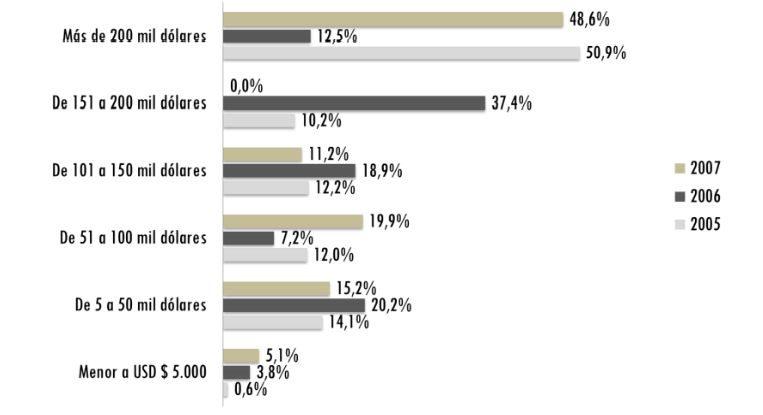

Introducción
La necesidad que surge en Colombia desde los años 90, cuando se da la apertura de su
economía, es la de proyectar una buena imagen que represente al país a nivel internacional. “Esta
imagen debe proyectar calidad y prestigio, de tal manera que ayude a impulsar la
internacionalización de sus productos por medio de exportaciones, pero a su vez debe atraer
inversión extrajera y turismo al país” (Ojeda, Perea, & Puerto, 2018, p. 80). Este artículo analiza
la evolución de la marca País en Colombia desde su creación, su evolución y la implementación
de la misma en Colombia y como se da a conocer en el mundo.
La marca País es un esfuerzo entre el gobierno nacional de Colombia (PROEXPORT,
2008) y el sector privado, la cual busca cerrar los paradigmas internacionales y demostrar que el
país posee riquezas naturales y culturales. “En el año 2005 se crea la campaña “Colombia es
pasión” la cual tuvo cinco campos de acción: publicidad, patrocinadores, compradores de licencias,
proyectos especiales y contenido medio lógico” (Villa, 2009, p. 41). Estos campos se centraron en
que las personas se sintieran orgullosas y hablaran bien de Colombia y a su vez promovieran el
comercio exterior; en el año 2011 esta campaña cumple su ciclo, dejando saldos positivos.
En el año 2012 se crea la campaña “la respuesta es Colombia” la cual se basa en dos pilares
1) el entorno: atrae miradas para la inversión y el turismo 2) la situación interna del país: les entrega
solución a las preguntas de inversión y turismo extranjero con hechos comprobables de la mano
de Pro Colombia. Estos dos pilares impactan directamente en los exportadores y empresarios
colombianos (Pro Colombia, 2020).
Para hacer uso de la marca País como empresa se debe cumplir ciertos requisitos por
ejemplo no estar involucrados en conflictos de intereses.
La implementación de la marca País en Colombia a nivel internacional representa una
cobija la cual ayuda a impulsar y dar valor a los productos y servicios que provienen de ese país,
es decir de Colombia para el mundo
El uso de la marca País y sus potenciadores pueden ser gratuitos siempre y cuando las
empresas cumplan con las obligaciones de ley y su contrato tendrá una vigencia de dos años
contados a partir de la suscripción.
Uno de los ejemplos de uso de la marca País fue la alianza con la federación de cafetero la
cual se nombre: café es pasión, o también el uso del logo por parte de Avianca (Villa, 2009), estas
campañas ayudan directamente a las empresas en su internalización, pero también impulsa la
marca país ya que son empresas o sectores de la economía con recorrido internacional.
En el año 2013 después de cuatro meses de estudio, se propuso lo que sería la segunda
marca país y se empleó una fuerte inversión en su creación. Durante el proceso de construcción de
la marca se habla de cuatros ejes, la cultura, las exportaciones, la inversión extranjera y el turismo.
Se crean alianzas con fontur y con la superintendencia de industria y comercio y con este cambio
llegan nuevas inversiones al país por medio de IED y turismo.
Materiales y metodología
La metodología usada en este artículo de reflexión, es una revisión documental
bibliográfica, en la que se utiliza varias fuentes, para lo cual se recurre a importantes y reconocidas
bases de datos como Dialnet, Scielo, Pro Colombia, entre otros, también repositorios
institucionales de universidades nacionales; con el objetivo de analizar la evolución e
implementación de la marca país en Colombia y su internacionalización.
Para el desarrollo del artículo de reflexión, se implementa una serie de fases. En efecto, se
realizó una revisión documental, con el fin de describir los aspectos relevantes de la marca país en
Colombia y su internacionalización. El proceso de desarrollo del artículo se describe por fases.
Primero, se seleccionó el tema acorde al interés propio y objetivo de búsqueda. Posteriormente, se
buscó en bases de datos bibliográficas, documentos afines a la temática planteada y, por último, se
estructuró el artículo de reflexión, con base en los parámetros, pautas y directrices establecidas
para su desarrollo.
Desarrollo
Buitrago (2010), explica que marca país se ajusta en un marco de definición de concepto
país, es decir que es una parte geográfica, la cual se identifica con el nombre de todo tipo (p. 28).
Igualmente, para Echeverri (2009), el pensamiento de marca país que emerge de la
obligación del sector privado y el sector público de identificarse como un país diferente y único
en el mundo. La forma en que se planifica el posicionamiento de un país es cuando se conoce el
lugar de origen de sus productos, sus empresas y su cultura en un ámbito global (p. 4).
Así mismo, Brigneti (2008) da el concepto de marca país, el cual es un diferenciador de la
cultura, productos y paisajes de un país con el objetivo de posicionarse a nivel internacional. Es la
mejor manera de aumentar su turismo, su inversión extranjera y sus exportaciones tanto en calidad
como en cantidad (p. 100).
Origen de la marca país
Al inicio de la década de los 90, el gobierno nacional junto al sector privado contrata los
servicios del economista internacional Michael Porter, con la intención de hacer un análisis sobre
las carencias y fortalezas de la economía Colombia (Echeverri, Rosker, & Restrepo, 2010).
El economista Michael Porter expone los lineamientos con los cuales Colombia debe
conseguir ventajas competitivas. Este análisis se basa en lo que el economista ha nombrado
“diamante de la competitividad” (Porter, 2014).
Según los estudios de Porter el país debe implementar uno de los 10 imperativos
estratégicos: expandir a Colombia, es decir, el país precisa de un posicionamiento global de su
producción mediante una figura que respalde sus cualidades y atractivos. Sin embargo, la
implementación de esta campaña tarda doce años, en los cuales se retoma la idea de incluir la
marca país.
A través de un grupo de personas conformado por la primera dama del país, la directora
del instituto para la exportación y moda y Luis Guillermo Plata director de Proexport, surge la idea
de crear una imagen país, en la cual participan todos los sectores de la economía colombiana
(Casez, 2015).
Se crea una delegación nacional para conocer su punto de vista sobre crear una marca país.
Más tarde se crea otra delegación de asesores, en el cual participan diferentes representantes de la
economía nacional para que aporten ideas en el diseño, estructura y concepto de la marca.
Coincidiendo en no asociar la imagen con temas negativos como la corrupción y el narcotráfico.
Después de un tiempo a través de los pioneros de la idea, se contrata a la empresa visual
marketing associates, empresa experta en campañas de diseño en diferentes países. El experto de
esta empresa extranjera el señor David Lightle, viaja por varias ciudades y municipios del país con
la idea de conocer el comportamiento de los colombianos, la música, la gastronomía y toda su
cultura; para investigar y ordenar la información recolectada.
Se realizaron varias preguntas, las cuales llevan al investigador a la conclusión de que las
virtudes del pueblo colombiano son el común diferenciador y que a su vez estas se compaginan en
una sola palabra pasión.
En el año 2005 se diseña el primer proyecto el cual se divulga, con el eslogan de “Colombia
es pasión” es de esta manera es como se inicia con la campaña de una marca país en Colombia
(Echeverri & Rosker, 2011).
Posicionamiento de la marca País
La mejor herramienta para el posicionamiento de la marca país, son las redes sociales, por
su fácil acceso y su libertad (Stieglitz & Dang-Xuan, 2013).
Cuando un país se transforma en marca, depende directamente del riesgo con el que lo
relacionan sus compradores. La definición de marca está relacionada a posicionamiento, es allí
cuando nace la importancia de hacer una estrategia de marca país y tener en cuenta el riesgo que
representa el país, en el cual se incluye su deuda externa (Barrientos, 2014, p. 122).
Supphellen & Nygaardsvik (2002), relaciona el diseño de marca país con el diseño de un
producto; ya que todo se centra en resaltar los aspectos positivos. Sin embargo, existe una
percepción y un análisis de identidad más complejo en los países que en los productos.
La imagen país se pone a prueba después de haber sido creada. Se puede decir que las
marcas toman una identidad de los mercados con los cuales encuentra afinidad o de las personas
que las consumen y las trasladan a su personalidad para llevarlo a un estilo de vida (Bhargava
(2009) citado en Echeverri, 2014).
La identidad de una marca es el objetivo al le apuntan los países, para convertirla en uno
de sus principales activos siendo el principal diferenciador frente a los demás países y crear una
ventaja competitiva. La identidad de un país proporciona dirección y significado a la marca (Aaker,
1996).
La razón que propicia a los países a inclinarse en la marca País se basa en los resultados de
su campaña publicitaria. El mercadeo utilizado en la campaña de la marca busca ser razonable en
un periodo corto de tiempo. El capital usado en esta marca País Colombia, se distribuyen de un 30
% del presupuesto nacional y un 70 % de las empresas o el sector privado. El mayor esfuerzo de
la marca país en Colombia se ha dado en el mercado interno y ha sido muy criticado ya que carece
de estrategias o de objetivos claros en los mercados internacionales. Los connacionales aman a su
país con sus virtudes y defectos, mientras los extranjeros tienen una percepción negativa; lo cual
deja en evidencia que los esfuerzos se están enfocando hacia el mercado contrario (Echeverri,
2011).
la postura se fusiona en el transcurso de creación y afianzamiento de la marca (Kotler,
Setiawan, & Kartajaya, 2010). El consumidor procesa las informaciones de las imágenes y las
ubica en conexión con los demás (McGhie, 2012). Un verdadero posicionamiento es cuando este
le da identidad propia a las empresas y a sus productos (Trout & Rivkin, 2010).
Implementación e internacionalización de la marca País
La globalización es la responsable de la ardua competencia entre los países, los cuales crean
estrategias para obtener una ventaja competitiva y de esta forma atraer turismo e inversión
extranjera (Clifton, 2011).
El uso de la marca país, es la actuación responsable de todos sus habitantes dentro y fuera
del país. Durante el mes de junio del año 2007, se da apertura al público del primer establecimiento.
El dinero que se recauda en este periodo, fue un poco más de USD 20.000. En una segunda fase,
se implementan estrategias de mercadeo dentro del aeropuerto el dorado en la ciudad de Bogotá,
con la intención de ser visibles a los viajeros e implantar una nueva mentalidad del país. Además
de esto se analiza la posibilidad de crear franquicias, puntos de venta y almacenes en todo el país.
Luego de un tiempo se lanza al mercado más de 290 productos y 750 referencias a nivel nacional.
A nivel internacional se plantea la presencia de marca país en varios de los estados de
EEUU donde Colombia hace gestión en temas de comercio exterior. Para el embajador de
Colombia en Inglaterra Mauricio Rodríguez (2012) (citado en Echeverri, 2014) Colombia tiene
una marca y un posicionamiento en el mundo, el cual es gracias a muchas cosas, entre ellas el
producto de Colombia es pasión; lo cual para él es un trabajo sobresaliente de esta campaña.
Muchas empresas del sector de alimentos, telecomunicaciones, de vehículos automotores,
entre otras eran potenciales socios, pero terminan dando una contestación poco alentadora a las
ambiciones de la campaña. El objetivo principal de Colombia es pasión era tener una autonomía
presupuestal, sin embargo, cinco de las grandes empresas que dieron o aportaron dinero en la fase
inicial de esta campaña solo se mantuvo una, la cual es Bancolombia. Respecto a los contratos 14
empresas renovaron sus licencias, lo cual genera discusiones internas en el consejo asesor.
La discusión o el dilema que se plantea, es para responder a la incógnita sobre la campaña
la cual no es clara para sus consumidores y crea confusión sobre lo que es, un aporte solidario o
una verdadera estrategia de marketing a nivel nacional e internacional.
En el siguiente cuadro se muestra las ventas en dólares de la campaña de Colombia es
pasión:
Figura 1. ventas totales 2005, 2006 y 2007

Fuente: Echeverri, 2014, p. 203.
Durante los años siguientes se desarrollan actividades en las que incorpora a los
empresarios y se creó cercanía con los integrantes de la imagen país. El fundamento se convierte
en divulgar la marca en mercados internacionales. Para el año 2009 el país queda rezagado y se
ubica en los peores puestos del continente, siendo esta posición poco alentadora, entendiendo que
solo han 4 años de su creación.
En el año 2010 se redefine su misión y visión, con lo cual su finalidad se centra en la
masificación y la auto sostenibilidad; ese mismo año Juan Manuel santos se posiciona como
presidente del país y autoriza la organización de la marca país como una entidad independiente de
Proexport. En la dirección de Claudia hoyos se propuso abarcar temas culturales, deportivos,
relaciones diplomáticas, etc.
En el año 2013 después de cuatro meses de estudio, se propuso lo que sería la segunda
marca país y se empleó una fuerte inversión en su creación. Durante el proceso de construcción de
la marca se habla de cuatros ejes, la cultura, las exportaciones, la inversión extranjera y el turismo.
Se plantea la estrategia de mercadeo territorial, que cubre las necesidades de expandirse y abarcar
una visión más completa que solo turismo, Divulgando en el exterior atributos en distintos sectores
y mejorando la percepción del país para que coincida con la realidad. En la siguiente fase plantea
el sistema y logo de la marca.
Figura 2. Potenciadores gráficos derivados de la marca País de Colombia.

Fuente: Echeverri, 2014 p. 218.
Marca País se une a Fontur y desarrolla una nueva identidad, crea una alianza para fundar
el sello de origen protegida país, el cual se usa solo en productos del agro y productos artesanales.
Desde su lanzamiento la marca país pasó a una etapa de coalición con empresas públicas y
privadas, y se estableció una tarifa con precio de USD 1000, USD2500, USD 5000 por membresía
de un año, el costo depende del tamaño de la empresa. En su etapa inicial se recaudó USD 250 mil
dólares. Luego se determina la gratuidad en el uso de la marca, siendo el estado su principal
aportante en ingresos de la marca. (Echeverri, La imagen y la marca país: propuesta de un modelo
estratégico de proyección-país para Colombia (tesis doctoral), 2014)
El mérito de una marca depende de la demanda en los mercados (Aaker, 1991). La marca
país es la suma del prestigio de un país y lo que sucede internamente en él (Anholt, 2005). Existe
una fórmula para medir la marca país según Josep Francesc (Valls, 1992).
IM = P + C = PE
Donde,
IM: Imagen País
P: Todo lo que ofrece un país (productos, turismo, tecnología, etc.)
C: Plan de Comunicaciones
PE: Percepción de clientes y prescriptores.
La marca País sirve de intermediaria para la colaboración entre las empresas privadas y sus
aliados, proyecto que ha dejado un reconocimiento a sus talentos a nivel internacional (Fundación
Andi, 2016, p. 12). Marca País cuenta con más de “400 aliados entre empresas personalidades”
(Ojeda, Perea, & Puerto, 2010, p. 228).
El cambio de campaña de la marca país en Colombia, sostuvo el sentimiento apasionado
de los colombianos y ayudó a ampliar la visión a una más global; ya que la nueva campaña abarca
temas más de negocios e inversión y no solo de cultura (Alarcón, 2020)
Según la información que tengan los consumidores de la marca dependerá su conducta y
la manera de entender las estrategias que diseñan las empresas (Lindstrom, 2011). La marca puede
ser medida dentro de unas variantes, como lo son el fácil acceso que tengan a los mercados, el
grado de memoria y de recuerdo que tenga el consumidor sobre ellas, la fidelidad de sus clientes
y el impacto de su mercadotecnia (Rafi, Ahsan, Saboor, Hafeez, & Usm, 2011).
De acuerdo con Castrogiovanni (2007) los académicos y algunos personajes de la política
ven el turismo como clave para conservar la herencia natural y cultural de un país. La marca país
debe generar conciencia de una forma crítica, de manera que ayude a realizar todas estas variantes
sin transmitir un mensaje tedioso que impacte negativamente la percepción de la comunidad
(Anholt, 2007).
“Colombia co” se internacionaliza a través de sus canales virtuales, desde una plataforma
en la que se pueden encontrar respuestas a muchas preguntas frecuentes que se hacen los
inversionistas extranjeros. Es una ventana que muestra porque Colombia es la respuesta y
cualquier persona con sentido de patriotismo se puede unir a la causa a través de sus redes sociales.
también se internacionaliza a través de comerciales de tv y canales sociales, plazas internacionales
y macrorruedas de negocios.
Discusión
Partiendo de la información recolectada para este artículo de reflexión, se entiende que la
marca país es la solución a la necesidad de los países de mostrar su cultura y sus riquezas naturales,
en el caso de Colombia se puede entender que ha sido un proceso difícil por su pasado violento y
relacionado con el narcotráfico (Villa, 2009). La marca país en Colombia es un punto de críticas
por algunos sectores de la economía y es por esta razón, que en sus inicios no encontró el apoyo
para su financiamiento. Es raro encontrar una empresa que no ayude a impulsar su marca, es decir
encontrar una empresa en el mundo que quiera vender con su imagen y no invierta el suficiente
dinero en ella, es tal vez el caso de Colombia que quiere dar a conocer sus atributos, pero no da el
suficiente dinero para su publicidad (Echeverri, La imagen y la marca país: propuesta de un modelo
estratégico de proyección-país para Colombia (tesis doctoral), 2014).
La marca país vende una imagen, pero no puede ocultar la realidad de un país con todas
sus problemáticas. Es el medio utilizado para promocionar al país, pero no existe la manera de
medir los resultados del impacto que la marca país genera en sus consumidores. Se puede
relacionar con el aumento del turismo, la venta de producto nacionales al exterior o la inversión
extranjera, pero esto puede ser consecuencia de otras políticas de comercio exterior utilizadas por
el país para mejorar su economía (Ojeda, Perea, & Puerto, Estrategia de la internacionalización de
marca País en Colombia: Recorrido histórico, enfoques y propuestslombia, 2018).
Lo cierto es que Colombia es un país rico en biodiversidad, el cual se identifica como un
país alegre por su gente, lleno de oportunidades y de cosas muy buenas, pero se deben hacer más
esfuerzos para llevar esta imagen al mundo. La marca país se debe complementar con la buena
gestión de los gobernantes colombianos y dejar de brillar en los periódicos del mundo por cosas
mala; y en lugar de esto se debe traer soluciones a las problemáticas que presenta el país y en
definitiva ser un país equitativo con una buena calidad de vida y que el mundo lo perciba de esta
manera.
Hay que reconocer que se hacen esfuerzos, y que en un futuro estos pueden cosechar frutos
para el país. Marca país cuenta con un portafolio, el cual incluye estrategias y campañas digitales
para trabajar de la mano con los empresarios colombianos, sirviendo como una ventana para la
promoción de sus productos. También se debe destacar las cosas buenas cosas que se han logrado
a pesar de que la marca país en Colombia es joven. Hay que seguir trabajando y duplicar esfuerzos
que ayuden a lograr el objetivo por el cual fue creada la marca país, el cual es cambiar la percepción
de la imagen negativa de Colombia en el mundo e internacionalizarse (Barrientos, 2014).
los colombianos se deben ser críticos y aportar a la imagen con un buen comportamiento,
ejemplo de esto es cuando un colombiano viaja al exterior y es foco de malas conductas o cuando
es atrapado en un aeropuerto cargando droga en su cuerpo, estos son comportamientos que opacan
cualquier campaña publicitaria por muy buena que esta sea (Echeverri, La marca país: el reflejo
de la identidad cultural y empresarial de una nación, 2009).
La idea de marca país es benigno y existen ejemplos alrededor del mundo que lo sustentan,
pero si en definitiva esta no va de la mano de una amplia inversión y de un manejo adecuado del
país en sus problemáticas, su objetivo de internacionalizarse queda solo en intenciones.
Conclusiones
El presente artículo de reflexión muestra que la marca país es un beneficio para la economía
colombiana, ya que ofrece una percepción del país que antes no se tenía, esto ayuda a su
internacionalización, atrae IED y turismo al país.
Durante el tiempo de la creación e implementación de la marca país, Colombia aprende a
vender su imagen, por medio de su cultura, sus productos y sus empresas.
El financiamiento de la campaña fue lo más difícil y generó muchas polémicas, pero se
pudo lograr con la ayuda de algunos sectores, en especial el sector público.
La imagen de Colombia está asociada a un posicionamiento negativo debido a su historia
de droga y violencia.
El posicionamiento de la marca país está asociada a creencias en lo imaginario colectivo,
lo cual quiere decir que cada país tiene cualidades únicas según la percepción de sus visitantes.
Referencias
- Aaker, D. (1991). Managing Brand Equity. New York: The Free Press.
- Aaker, D. (1996). Building Strong Brands. New York: City: The Free Press. Obtenido de
https://www.academia.edu/34383247/David_A_Aaker_Building_Strong_Brands
- Alarcón, J. P. (2020). Marca País y Turismo Receptivo: un análisis de Colombia y Brasil en el
periodo 2005-2018. Bogotá: Universidad de La Salle. Obtenido de
https://ciencia.lasalle.edu.co/cgi/viewcontent.cgi?article=1214&context=negocios_relaciones
- Anholt, S. (2005). Nation brand as context and reputation. Place Branding, 1(3), 224-228.
- Anholt, S. (2007). Competitive identity, the new brand management for nation, cities and
regions.
New York: Palgrave MacMillan.
- Barrientos, P. (2014). El desarrollo de la marca país: base para posicionarse a través de las
exportaciones no tradicionales. Finanz. polit. econ., 6(1), 115-140. Obtenido de
http://www.scielo.org.co/pdf/fype/v6n1/v6n1a06.pdf
- Bhargava, R. (2009). Personalidad de marca. México: McGraw-Hill Interamericana.
- Brigneti, H. (2008). Perú Ahora: Una marca país. Ingeniería Industria (28), 99-109. Obtenido de
https://www.redalyc.org/pdf/3374/337428492006.pdf
- Buitrago, F. (2010). La marca país como estrategia competitiva en el desarrollo del
posicionamiento de un país a nivel nacional e internacional (tesis maestría). Argentina:
Universidad Nacional de La Plata. Obtenido de
http://sedici.unlp.edu.ar/bitstream/handle/10915/3418/Documento_completo.pdf?sequence=1&isAllowed=y
- Casez, C. (2015). Marca País: El caso de Argentina y Colombia. Universidad de San Andrés.
Obtenido de
repositorio.udesa.edu.ar/jspui/bitstream/10908/11972/1/%5BP%5D%5BW%5D%20T.L.%20Adm.%20Cazes%2C%20Candelaria.pdf
- Castrogiovanni, A. G. (2007). Lugar, No-lugar y Entre-lugar. Los ángulos del espacio turístico.
Estudios y Perspectivas en Turismo, 16, 5-25. Obtenido de
http://estudiosenturismo.com.ar/PDF/V16/v16n1a01.pdf
- Clifton, N. (2011). Regional Culture in the Market Place: Place Branding and Product Branding
as Cultural Exchange. European Planning Studies, 19(11), 1973-1994.
doi:10.1080/09654313.2011.618689
- Echeverri, L. M. (2009). La marca país: el reflejo de la identidad cultural y empresarial de
una
nación. ASCOLFA. Obtenido de
https://www.researchgate.net/publication/306602743_La_marca_pais_el_reflejo_de_la_identidad_cultural_y_empresarial_de_una_nacion
- Echeverri, L. M. (2014). La imagen y la marca país: propuesta de un modelo estratégico de
proyección-país para Colombia (tesis doctoral). Universidad de León. Obtenido de https://buleria.unileon.es/bitstream/handle/10612/3921/tesis_d206e2.pdf?sequence=1&is
Allowed=y
- Echeverri, L. M., & Rosker, E. J. (2011). Estrategias y experiencias en la construcción de
marca
país en Argentina y Colombia. XIV Congreso Internacional de Contaduría Administración
e Informática (págs. 1-16). Ciudad Universitaria, México: UNAM. Obtenido de
http://congreso.investiga.fca.unam.mx/docs/xvi/docs/14H.pdf
- Echeverri, L. M., Rosker, E., & Restrepo, M. L. (2010). Los orígenes de la marca país Colombia
es pasión. Red de Revistas Científicas de América Latina, el Caribe, España y Portugal,
409-420. Obtenido de
https://www.researchgate.net/publication/300011095_Los_origenes_de_la_marca_pais_Colombia_es_pasion
- Fundación Andi. (2016). Lineamientos de cooperación internacional para el sector privado.
Agencia Presidencial para la Cooperación Internacional.
- Kotler, P., Setiawan, I., & Kartajaya, H. (2010). Marketing 3.0: From Products to Customers to
the Human Spirit. Canada: Wiley.
- Lindstrom, M. (2011). Brandwashed. Bogotá: Grupo Editorial Norma.
- McGhie, A. (2012). Brand Is a Four Letter Word: Positioning and the Real Art of Marketing.
United Stated of America: Advantage.
- Ojeda, R., Perea, M., & Puerto, A. (2018). Estrategia de la internacionalización de marca País
en
Colombia: Recorrido histórico, enfoques y propuestslombia. Revista Chakiñan(4), 78-94.
Obtenido de http://scielo.senescyt.gob.ec/pdf/rchakin/n4/2550-6722-rchakin-04-00078.pdf
- Ojeda, R., Perea, M., & Puerto, A. V. (2010). Acciones estratégicas de Marca Colombia en torno
a la inversión extranjera directa durante los años 2010 al 2015. OASIS, 29, 223-235.
doi: https://doi.org/10.18601/16577558.n29.11
- Porter, M. (2014). Informe Monitor. Creando la Ventaja Competitiva de Colombia. Obtenido de
https://www.academia.edu/29629453/
- Procolombia. (2020). Historia de Marca Colombia. Obtenido de https://www.colombia.co/marcacolombia/quienes-somos/historia-de-la-marca/historia-de-marca-colombia/
- PROEXPORT. (2008). El turismo receptivo colombiano. Bogotá. Obtenido de
https://procolombia.co/sites/default/files/docnewsno10136documentno8298.pdf
- Rafi, A., Ahsan, M., Saboor, F., Hafeez, S., & Usm, M. (2011). Knowledge Metrics of Band
Equity: Critical Measure of Brand Attachment and Brand Attitude Strength. Asian Journal
Of Business Management, 3(4), 294-298. Obtenido de
https://www.researchgate.net/publication/
- Stieglitz, S., & Dang-Xuan, L. (2013). Emotions and Information Diffusion in Social Media —
Sentiment of Microblogs and Sharing Behavior. Journal of Management Information
Systems, 29(4), 217-248. doi: 10.2753/MIS0742-1222290408
- Supphellen , M., & Nygaardsvik , I. (2020). Testing country brand slogans: Conceptual
development and empirical illustration of a simple normative model. Journal of Brand
Management, 9(4), 385-395. doi: https://doi.org/10.1057/palgrave.bm.2540085
- Trout, J., & Rivkin, S. (2010). Differentiate or Die: Survival in Our Era of Killer
Competition.
United States of America: Wiley.
- Valls, J. F. (1992). La imagen de marca de los paises. Madrid: McGraw Hill.
- Villa, P. A. (2009). Hacia una estrategia de marca País: Caso C0lombia es pasión (tesis
pregrado). Bogotá: Universidad Colegio Mayor de Nuestra Señora del Rosario. Obtenido
de https://repository.urosario.edu.co/handle/10336/1489

 Estudiante Programa de Comercio
Internacional, Universidad Francisco de Paula Santander,
jhonedinsonir@ufps.edu.co.
Estudiante Programa de Comercio
Internacional, Universidad Francisco de Paula Santander,
jhonedinsonir@ufps.edu.co.